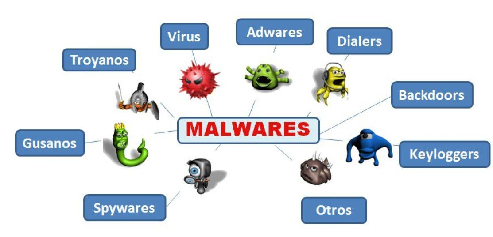
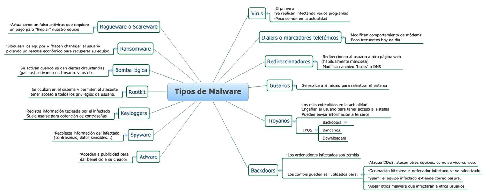

Tipos de malware y terminología
Este es el módulo con más vocabulario de toda la asignatura. No conviene memorizar los términos de forma aislada: la mayoría se entiende mejor si se agrupan por lo que tienen en común, ya sea el mecanismo de propagación, el engaño al usuario o el objetivo final que persiguen.
1 Panorama general
La propia presentación resume el catálogo de tipos de malware en dos mapas visuales. El primero agrupa las categorías principales; el segundo añade, junto a cada una, sus rasgos distintivos y, en el caso de los troyanos y las puertas traseras, sus variantes internas. Conviene mirarlos antes de leer las definiciones detalladas, porque ayudan a situar cada término dentro del conjunto.


2 Tres términos base
Antes de entrar en tipos concretos, la presentación fija tres etiquetas que se usarán durante todo el curso para clasificar cualquier muestra de software analizada:
Malware (malicious software)
Software malicioso: cualquier código creado con intención de causar daño, obtener acceso no autorizado o beneficiar ilegítimamente a su autor.
PUP / PUA
Software no deseado (Potentially Unwanted Program / Potentially Unwanted Application). Se instala habitualmente junto a otro software legítimo, sin ser abiertamente malicioso, pero sin que el usuario lo desee realmente.
Goodware
Software no malicioso. Es la categoría de referencia frente a la que se compara toda muestra sospechosa durante un análisis.
3 Malware que se replica por sí mismo
Virus y gusanos comparten la capacidad de multiplicarse, pero se diferencian en un punto clave: si necesitan o no un archivo anfitrión y la intervención de una persona para propagarse.
Virus
Depende de un fichero anfitrión y de intervención humana para replicarse y propagarse. En la actualidad prácticamente no existen virus propiamente dichos: el término se usa de forma genérica como sinónimo de "malware", igual que ocurre coloquialmente con "tener un virus en el ordenador".
Gusano (worm)
Posee capacidad de autorreplicación y propagación sin fichero anfitrión ni intervención humana. Se expande con rapidez a través de las redes informáticas, lo que explica episodios como el gusano Morris o ILOVEYOU, tratados en el módulo 4.
4 Malware que engaña al usuario
Esta familia no depende de una vulnerabilidad técnica, sino de la confianza o el miedo del usuario. El troyano se hace pasar por software legítimo para que lo instalemos nosotros mismos; el scareware y el rogueware, en cambio, fabrican una amenaza inexistente para presionarnos a actuar.
Troyano (trojan)
Programa malicioso que se hace pasar por software benigno para que el usuario lo instale voluntariamente en su sistema. Según el mapa de la presentación, dentro de los troyanos se distinguen tres tipos: backdoors (abren una puerta trasera), bancarios (dirigidos a robar credenciales financieras) y downloaders (descargan otro malware tras la instalación).
Scareware
Término genérico para cualquier software malicioso que engaña al usuario infundiéndole pánico o temor, de modo que perciba una amenaza y lleve a cabo alguna acción beneficiosa para el adversario.
Rogueware
Tipo específico de scareware que actúa como un falso antivirus: engaña a la víctima haciéndole creer que su equipo está infectado para que pague por una "desinfección", se suscriba a un servicio o descargue software adicional.
5 Vigilancia y robo de información
Estos tipos comparten el objetivo de obtener información de la víctima sin ser detectados, aunque difieren en qué información capturan y cómo.
Spyware
Término genérico para designar software malicioso que se ejecuta de forma sigilosa en un sistema con el fin de recopilar información sobre la víctima (contraseñas, datos sensibles, hábitos de navegación...).
Keylogger
Tipo de spyware especializado en registrar las pulsaciones del teclado del equipo infectado. Suele usarse para obtener contraseñas y otra información tecleada por la víctima.
Stealer
Término genérico empleado para designar al software malicioso desarrollado específicamente para robar información ya almacenada en el sistema de la víctima (credenciales guardadas, carteras de criptomonedas, cookies de sesión, etc.).
Adware
Software no deseado diseñado para mostrar anuncios en el dispositivo de la víctima, generando un beneficio económico para su creador. Se sitúa a caballo entre el PUP y el malware según lo agresivo de su comportamiento.
6 Acceso remoto y persistencia
Backdoor, RAT y rootkit tienen en común dar al atacante una vía de entrada duradera al sistema comprometido, aunque cada uno resuelve un problema distinto: abrir el acceso, administrarlo cómodamente o esconderlo de las herramientas de seguridad.
Backdoor (puerta trasera)
Malware que proporciona al atacante un acceso remoto a la máquina de la víctima. Los equipos infectados con un backdoor se convierten en "zombis": pueden usarse para lanzar ataques DDoS contra otros equipos, para minar criptomonedas ralentizando el sistema, para distribuir spam o para alojar y propagar otros malwares.
RAT (Remote Administration Tool)
Software malicioso que permite la administración remota completa del dispositivo víctima, con un nivel de control equivalente al de una herramienta legítima de asistencia remota, pero sin el conocimiento ni el consentimiento del usuario.
Rootkit
Software malicioso diseñado para infectar una máquina con privilegios de administrador y permanecer oculto en ella, dificultando su detección por las aplicaciones antimalware y otros productos de ciberseguridad.
7 Extorsión y sabotaje silencioso
Ransomware
Malware que impide a la víctima acceder a su sistema o a sus archivos (normalmente cifrándolos) y exige el pago de un rescate para recuperar el acceso. Es, hoy, el modelo de negocio dominante en el cibercrimen, como se detalla en el módulo 4.
Bomba lógica
Código malicioso que infecta silenciosamente un sistema y permanece inactivo hasta que se cumple una condición específica, denominada detonador (una fecha, una acción del usuario, la ausencia de una señal periódica, etc.).
8 Otros mecanismos y la infraestructura de control
Dialer
Programa malicioso que utiliza el módem o la conexión de telefonía móvil del dispositivo para realizar sigilosamente conexiones telefónicas no autorizadas, generando cargos económicos a la víctima. Poco frecuente hoy en día, fue habitual en la era de la conexión telefónica a Internet.
Redireccionador
Malware que redirecciona la navegación del usuario hacia un sitio web de interés para el atacante, habitualmente modificando el archivo hosts o la configuración DNS del equipo.
Downloader
Software malicioso cuya función principal es descargar desde Internet otro software que contiene la carga útil maliciosa real (payload), e instalarla en el equipo de la víctima.
Dropper
Cumple la misma función instaladora que el downloader, pero con una diferencia importante: el malware que instala no se descarga desde Internet, sino que ya está contenido dentro del propio dropper.
Botnet (red zombi)
Red de equipos infectados que se pueden administrar remotamente para llevar a cabo alguna acción maliciosa coordinada, como enviar spam masivo o participar en un ataque DDoS.
Command and Control (C&C o C2)
Servidor utilizado por los atacantes para enviar órdenes al malware instalado en los equipos de las víctimas, o para recibir información desde los mismos. Es la pieza que convierte un conjunto de equipos infectados en una botnet coordinada.
✓ Repasa lo aprendido
Diez preguntas para consolidar el vocabulario de este módulo antes de pasar a la nomenclatura.